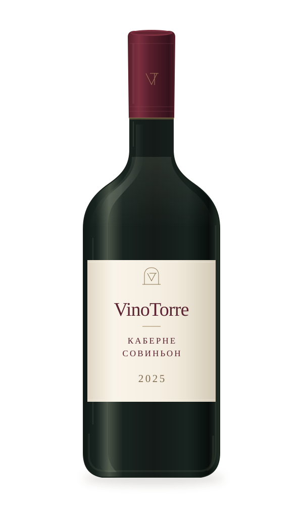
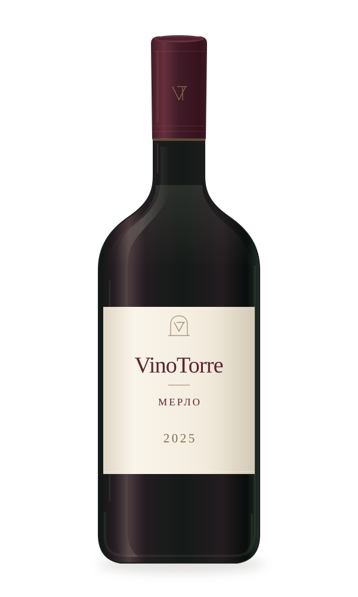

CABERNET SAUVIGNON2025

Каберне
Совиньон
Сорт — Каберне Совиньон.
Год урожая — 2025.
Авторская иллюстрация. Фотография будет добавлена.
VINOTORRE / КОЛЛЕКЦИЯ ВИН
УРОЖАЙ 2025Каберне Совиньон и Мерло.
Два названия, с которых начинается
знакомство с коллекцией VinoTorre.

Сорт — Каберне Совиньон.
Год урожая — 2025.
Авторская иллюстрация. Фотография будет добавлена.

Сорт — Мерло.
Год урожая — 2025.
Авторская иллюстрация. Фотография будет добавлена.
Коллекция представлена для знакомства. Неподтвержденные характеристики не публикуются. Иллюстрации не передают фактический вид бутылок и этикеток.
ПРОДОЛЖИТЬ ЗНАКОМСТВО
За названиями на этикетках — место.
Узнайте, где находится VinoTorre, и уточните возможность посещения.